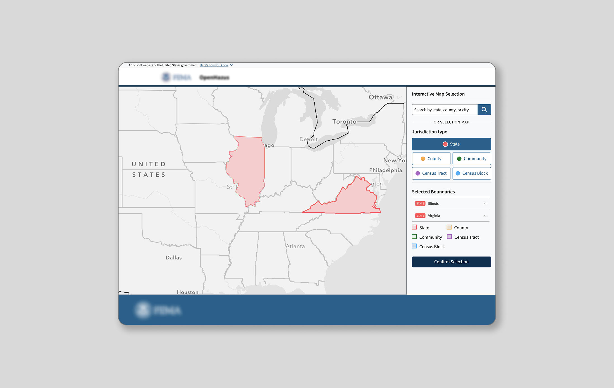
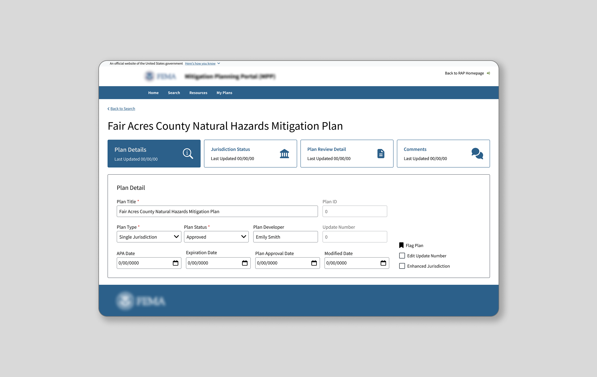

UI/UX Designer based in Washington D.C.
I design digital experiences that are intuitive by intent and considered in every detail. From complex Federal platforms to public-facing tools, I translate ambiguity into interfaces people can trust.

FEMA · Hazard Analysis
OpenHazus Interactive Map Viewer
Designing the analyst workflow for a national hazard loss estimation platform.

FEMA · Mitigation Planning
MPP 2.0
Sole UX designer on a modernization effort for the Mitigation Planning Portal.
GSA · Acquisition
SAM.gov
Redesigning the search results experience for a unified federal acquisition platform.
CMS · Patient Data
CMS Workspace
Workspace redesign for a large-scale patient data management system.